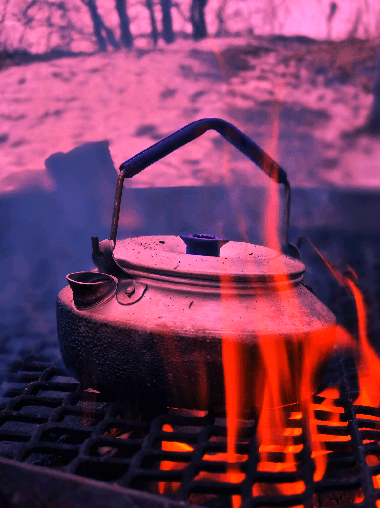
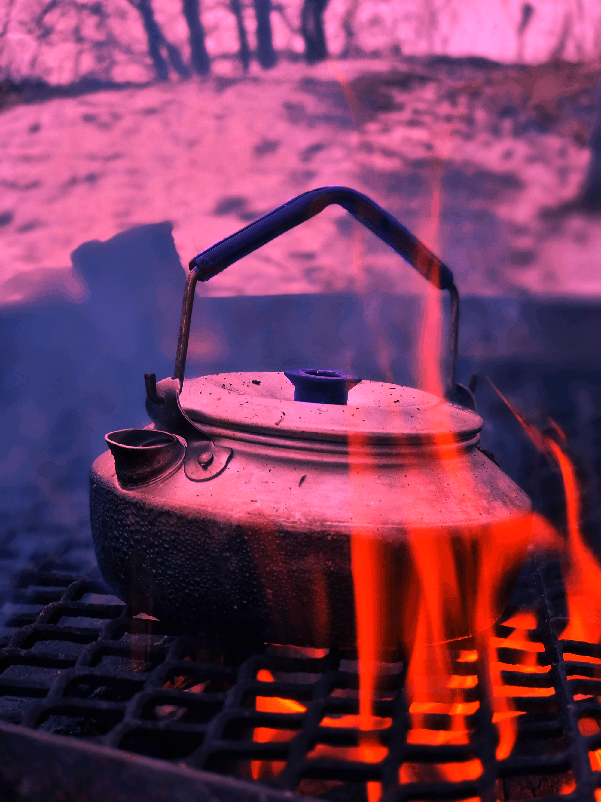
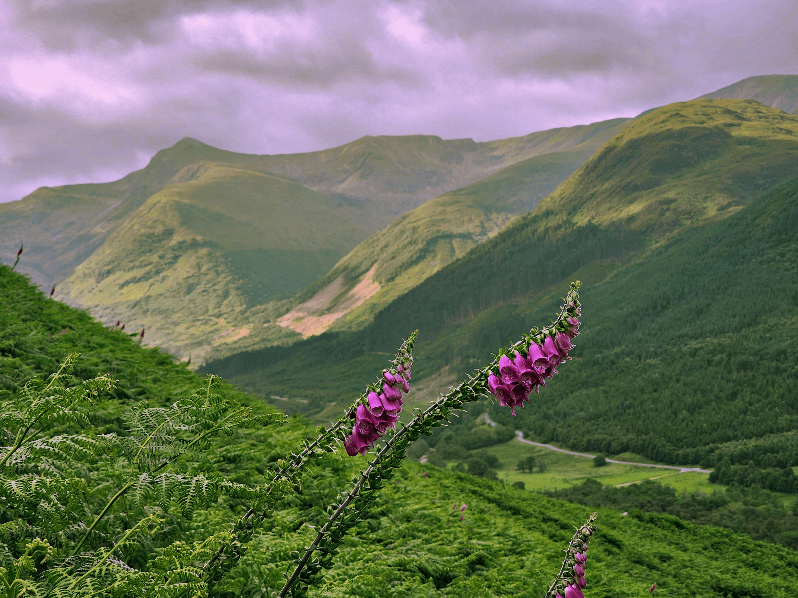
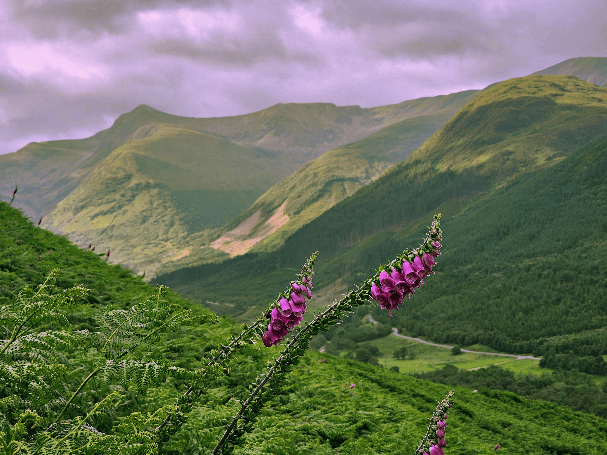

Bild 010, före och efter


Bild 013, före och efter
 

Jag har bytt färg på kannans och lockets handtag genom att markera dessa med lasson och dra i den blå kanalen i curves.
Bild 001, före och efter
 
